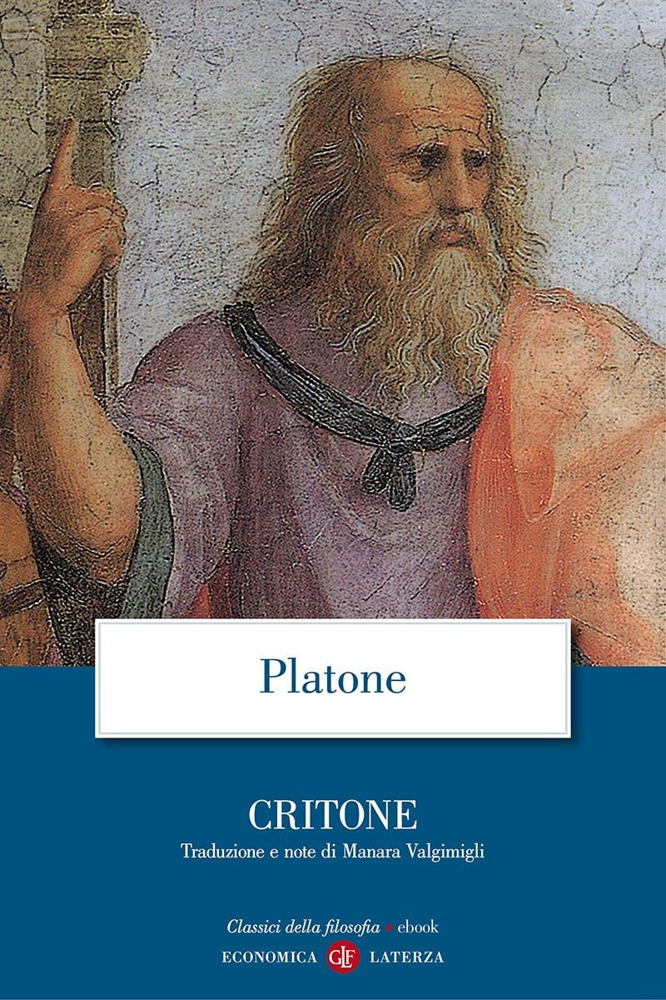
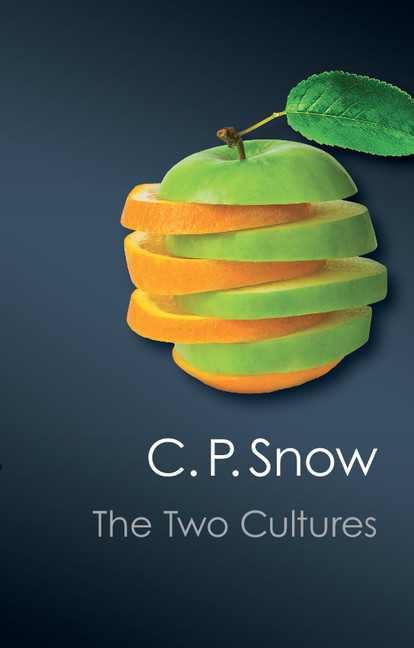
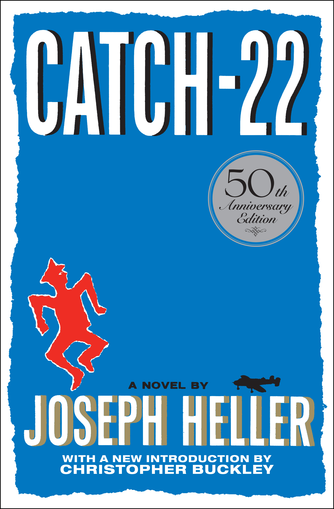
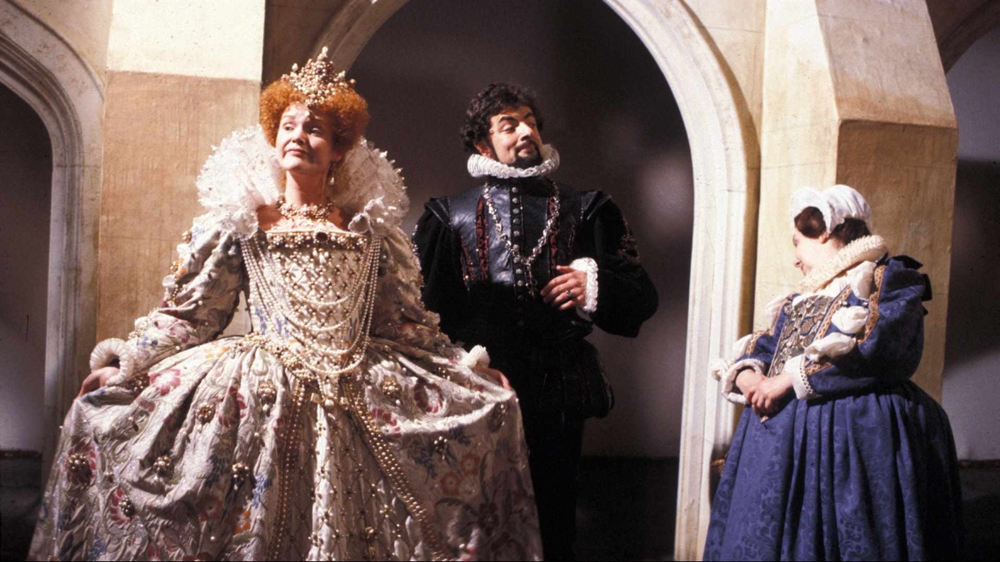

1:06:26 · 14 OPERE
L'alto è ormai basso ed il basso, alto.
Il filo del discorso
Muovendo dal capitolo3 di Isaia e dalle Leggi di Platone, Caldarella interpreta il presente come un’inversione delle gerarchie di valore e del rapporto fra fatti e autorità. La polemica passa dalla rappresentazione giornalistica del riarmo alla crisi cubana e alle assicurazioni diplomatiche sull’espansione della NATO, poi al diritto antico, a Socrate e alla distanza fra norme e comportamenti. Le due culture di Snow, il paradosso di Comma22 e una scena di Blackadder alimentano la domanda su che cosa distingua pensiero autonomo, obbedienza e semplice ripetizione. Una parte rilevante riguarda VigiAccess: la scheda distingue il valore delle segnalazioni di farmacovigilanza dalla conferma di causalità e dai confronti di rischio che i soli conteggi non permettono. La critica di scuola, media e incarichi pubblici resta attribuita al relatore; non vengono accolte come fatti le accuse personali, le diagnosi polemiche o le equivalenze fra istituzioni contemporanee e regimi storici. Riferimenti identificati, collegamenti probabili e documenti ancora privi di estremi sono separati, con correzioni sul contesto della crisi cubana, su Galileo e sul significato dei confronti sanitari territoriali.
I libri nel discorso

Isaia
Copertina del volume completo: San Paolo, 2014 · Nuova Versione dai Testi Antichi · edizione di riferimento
Isaia è un libro della Bibbia. L’immagine mostra il volume completo di riferimento San Paolo, non un’edizione autonoma di Isaia né una versione identificata nella citazione.
Libro nominato e versetti riconoscibili: cap3,4–5, non Trito-Isaia. Il testoCEI riscontra contenuto ma non la specifica traduzione recitata.
Passaggio 0:06 ↗ · Fonti e libro ↗
Leggi (The Laws)
Copertina: Penguin Classics,28giugno2005,560pagine; traduzione,introduzione e note di Trevor J. Saunders,prefazione di Richard Stalley. Copertina della traduzione inglese; nessuna edizione attribuita al relatore.
Immagine autentica dell’opera, controllata visivamente; l’edizione di riferimento non è attribuita al filmato.
Titolo Le leggi di Platone esplicito; frase sugli uomini di poco valore e di valore. Passo preciso non localizzato, nessuna numerazione attribuita.
Passaggio 0:53 ↗ · Fonti e libro ↗
La ballata delle madri
Identificazione probabile
Copertina della raccolta: Garzanti · 2001
La ballata delle madri è contenuta in Poesia in forma di rosa. L’immagine mostra la raccolta Garzanti del 2001, con prefazione di Edoardo Esposito, non un volume autonomo della poesia né l’edizione del video.
La formula sulle madri avute richiama Pasolini: titolo non completo e identificazione probabile con la poesia già censita.
Passaggio 11:05 ↗ · Fonti e libro ↗
Codice di Hammurabi
Fotografia della stele: Stele paleobabilonese del regno di Hammurabi, XVIII secolo a.C.; esemplare SB 8, Musée du Louvre. Fotografia dell’oggetto, nessuna edizione libraria attribuita.
Fotografia integrale della stele SB 8 conservata al Louvre, reperita nel catalogo delle collezioni. È un’immagine dell’oggetto antico, non una copertina né una pagina di una traduzione. Respinta l’immagine promozionale con smartphone proposta dalla pagina introduttiva.
Codice di Hammurabi nominato nella comparazione fra diritto e civiltà; nessuna edizione precisa.
Passaggio 12:27 ↗ · Fonti e libro ↗Bibbia
Copertina: San Paolo, 2014 · Nuova Versione dai Testi Antichi · edizione di riferimento
Diritto biblico esplicito quale riferimento generale, senza scegliere arbitrariamente Esodo,Levitico o Deuteronomio.
Passaggio 12:35 ↗ · Fonti e libro ↗
La Repubblica
Identificazione probabile
Copertina: Laterza · La Repubblica · edizione con testo a fronte di riferimento
Immagine associata all’ISBN di riferimento e controllata visivamente; edizione e traduzione non identificate come quelle citate o lette nel video.
Platone e tiranno come lupo, collegamento probabile alla RepubblicaVIII565d–566a riscontrato nel testo primario; titolo non pronunciato.
Passaggio 17:08 ↗ · Fonti e libro ↗
Critone
Identificazione probabile
Copertina: Economica Laterza · eBook autonomo2019 · traduzione e note di Manara Valgimigli · ISBN 9788858139431
Copertina autentica dell’eBook autonomo Critone dal catalogo ufficiale Laterza, titolo e traduttore leggibili. Il catalogo lo indica come eBook2019, malgrado una sua etichetta generica ISBN carta: non è presentato come edizione cartacea. Distinto dal volume combinato Apologia di Socrate - Critone ISBN9788842050735. Nessuna di queste edizioni è attribuita al video.
Rifiuto socratico della fuga dopo una vita protetta dalle leggi: identificazione probabile del Critone50a–54d; titolo e traduzione non pronunciati.
Passaggio 18:54 ↗ · Fonti e libro ↗
Costituzione della Repubblica Italiana
Identificazione probabile
Copertina dell’edizione Intra aggiornata al 2023: Intra · 2023 · introduzione di Umberto Vincenti
Copertina autentica del testo integrale, aggiornata alla legge costituzionale 26 settembre 2023 n.1. È successiva al filmato del 2019 e non rappresenta la versione storica letta dal relatore. Umberto Vincenti firma l’introduzione. I tentativi di acquisire PDF istituzionali hanno restituito HTTP 403: nessun PDF o frontespizio è simulato come scaricato.
Il richiamo alla Costituzione diventa poi critica dell’ordinamento della Repubblica italiana; nessun articolo singolo ricavato dalla sola parafrasi.
Passaggio 19:50 ↗ · Fonti e libro ↗
Le due culture (The Two Cultures)
Copertina: Conferenza Rede1959. Copertina The Two Cultures,Cambridge University Press,Canto Classics,26marzo2012,179pagine,ISBN9781107606142,introduzione diStefanCollini; comprende anche ASecondLook1963. Il2014 è la data della versione digitale nel catalogo,non la prima pubblicazione del saggio.
Copertina autentica con frutto composto da sezioni diverse,titolo e C.P.Snow,dal catalogoCambridge. Edizione moderna contenente la conferenza1959 e il seguito1963,non volume esclusivamente dedicato al disarmo.
Le due culture di C.P.Snow e1959 espliciti, cronologia editoriale verificata daCambridge.
Passaggio 21:03 ↗ · Fonti e libro ↗
Comma 22 / Catch-22
Copertina: Simon & Schuster · 50th Anniversary Edition · 2011 · ISBN 9781451621174
Copertina autentica inglese del cinquantenario dal download ad alta risoluzione del catalogo Simon & Schuster: titolo, Joseph Heller e introduzione di Christopher Buckley leggibili. Buckley non è coautore del romanzo. Questa edizione2011 è un riferimento bibliografico e non viene assegnata alla copia del relatore; non si inventa l’edizione italiana dalla sola traduzione del titolo.
Titolo italianoComma22, ingleseCatch-22 eHeller espliciti; segue il paradosso del rifiuto delle missioni, distinto dagli adattamenti.
Passaggio 23:16 ↗ · Fonti e libro ↗VigiAccess
Copertina: Uppsala Monitoring Centre · dépliant ufficiale VigiAccess · stampa2015 · pagina1
Prima pagina intera del dépliant ufficiale UMC in PDF, rasterizzata fedelmente con Poppler a110dpi senza ritagli o riscritture. È la copertina di un documento illustrativo del servizio VigiAccess, non una copertina del database né la tabella presentata dal relatore. Il credito finale del PDF indica stampaKph2015. Il PDF originale resta privato: solo questa immagine è candidata per il repertorio.
VigiAccess,Uppsala,OMS,VigiBase e2015 espliciti. Si identifica il servizio; la tabella precisa non è verificata come prodotto ufficiale.
Passaggio 34:13 ↗ · Fonti e libro ↗
Head (Blackadder II, episodio2)
Identificazione probabile
Fotografia dell’episodio BBC,1986: Fotografia ufficiale BBC dell’episodio Head, prima trasmissione16gennaio1986. Da sinistra Miranda Richardson come ElisabettaI, Rowan Atkinson come Edmund Blackadder e Patsy Byrne come Nursie. Immagine acquisita dalla scheda Apple TV, non copertina di un libro e non la inquadratura della battuta sui fagioli.
Fotografia ufficiale della scena a corte, corrispondente alla didascalia BBC. Non mostra Baldrick mentre conta. La scena non è dell’episodio del dizionario della terza serie.
Blackadder eBaldrick espliciti; scena in cui ripete l’invito a pensare corrisponde probabilmente aBlackadderII2, citata nella tesiEvers2015p.i, distinta dalla scena del dizionario.
Passaggio 42:39 ↗ · Fonti e libro ↗
Sulla stupidità
Identificazione probabile
Raccolta: Queriniana · Resistenza e resa · edizione di riferimento
Copertina di Resistenza e resa, raccolta indicata dal relatore come provenienza del testo Sulla stupidità. Non è una copertina autonoma del saggio; edizione e traduzione non attribuite alla lettura.
Bonhoeffer e semplicità meno esposta ai filtri ideologici: tema coerente con Sulla stupidità nella raccoltaResistenzaeResa; titolo non pronunciato e parafrasi non autenticata.
Passaggio 45:08 ↗ · Fonti e libro ↗
The Rape of the Mind
Identificazione probabile
Copertina: World Publishing Company · 1956 · testo inglese
Fotografia della copertina dell’edizione originale del 1956, fornita dal catalogo Open Library. I segni d’usura appartengono all’esemplare fotografato. Edizione del video non accertata.
Meerloo, psichiatra olandese, e menticidio riconoscibili: titolo non pronunciato, collegamento probabile all’opera già presente.
Passaggio 58:46 ↗ · Fonti e libro ↗Minutaggi ricavati da testi automatici, da riascoltare. Le identificazioni probabili sono segnalate accanto ai libri.